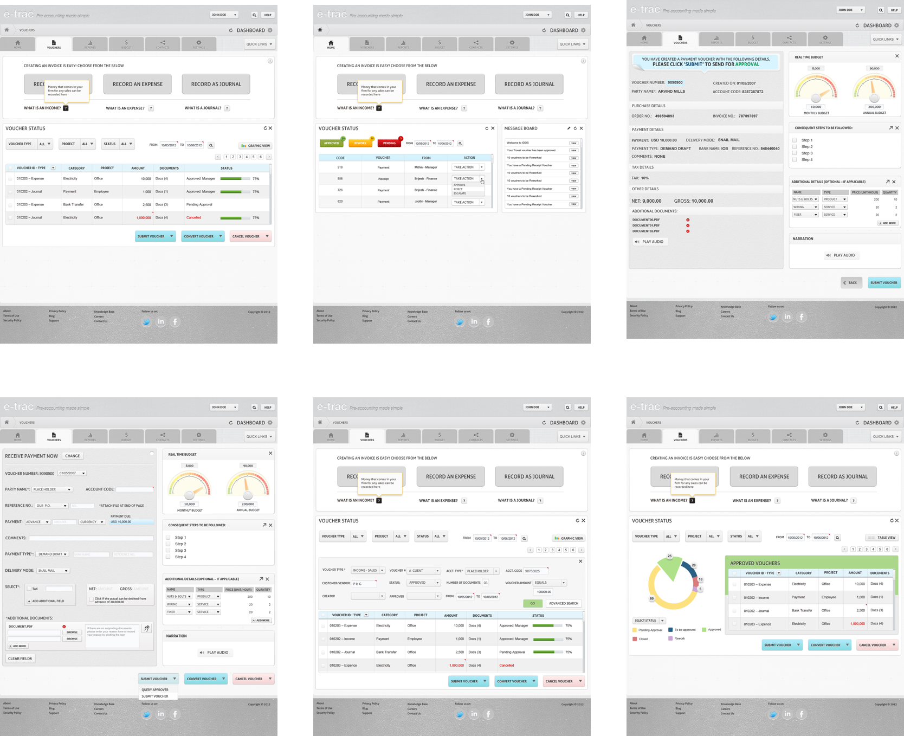
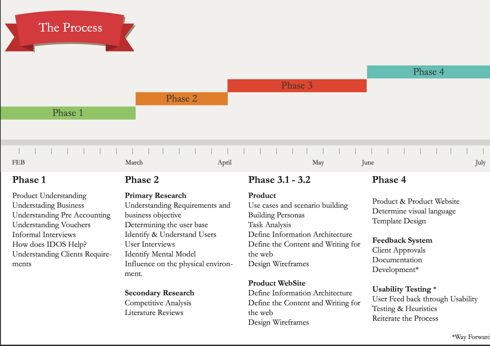
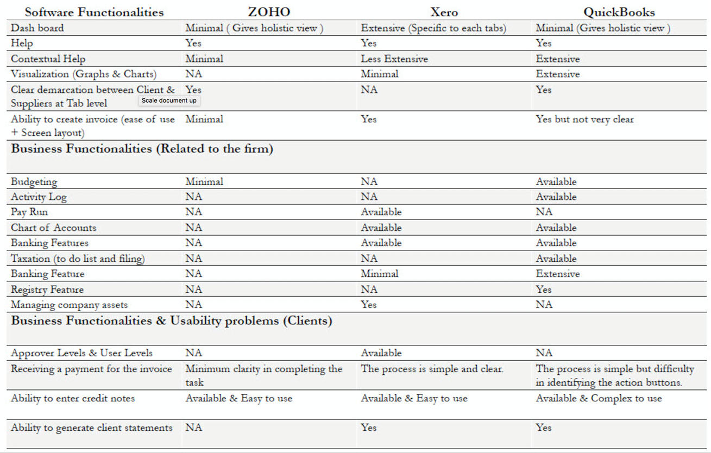
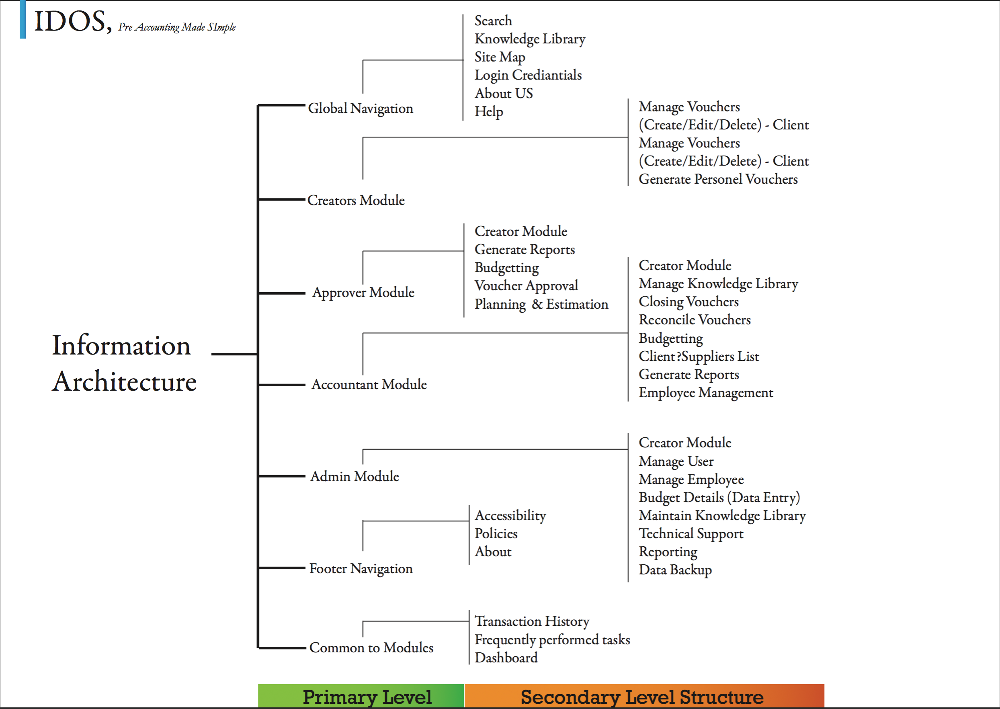
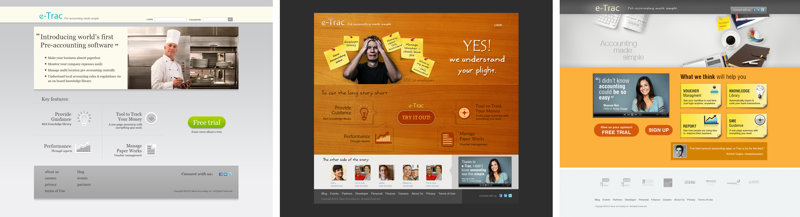
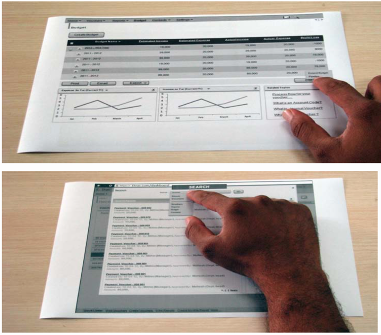

Voucher Management Tool — Pre-Accounting Tool
NID - Final Year Thesis Project
Duration:
2 months
Type:
Thesis Project
Roles and Responsibilities:
UX, Visual Design and Testing
The Problem
The aim of the project will be to address all the problems stated and design a software application (for Web) that help small and medium sized rms to seamlessly record and track the nances (Pre Audits) in an ef cient and cost effective manner.
Salient Features of the VM
[the product has been renamed due to NDA purpose]
VM is not accounting software, but a software which precede the recording of transactions in the books of account.
• Based on the input of fundamental accounting information, VM has features to provide signi cant business intelligence, enabling companies to ef ciently manage costs and accounting operations in any part of the world.
• VM can be used by both small organizations with revenues of under USD 1 Million and large organizations with USD 1 Billion or more in revenues.
• VM works in synch with existing accounting ERP / software, so businesses need not worry about replacing or modifying their existing accounting system.
• VM supplements the existing software and is not intended to replace it.
• VM is a global product which can be used in any country - TRULY GLOBAL IN IT’S UTILITY!!

My Role
I was involved in the entire design effort for this project. Right from research to user testing was carried out at a breakneck speed. This project was my final year thesis project - duration 6 montsh
Design Process

Step 1: User Research and Understanding the Problem
• From our first hand research we have come to understand that tracking nances can be broken down to simple actions and task that allows a system that can be used by anyone in the system (someone who knows basic of computers).
• As per our understanding, the fnancial system, one of the problems small and medium sized forms face is recording petty cash and small chunks of money in small and medium sized rms we understood that this money don’t really have any records and at the end of the day all these petty expense accumulate to big amounts which they don’t have record for.
Based on our user testing and knowledge we acquired I clustered all findings and tried to make sense of it by grouping them. Post that I defined the the primary problem that we would be tackling which was solving for login by communicating the apps philosophy and making sure users select the right services.
Competitive Analysis
The products were rated for various usability parameters like Home Page, Navigation, Content, Search feature and the results of these ratings are published in the table. With respect to functionalities, the products were tested for addressing basic accounting tasks, comprehensive analysis and range of features provided for the user to carry out the tasks.

Understanding use cases and defining goals
The way we could see it was design a module based system were users can be interchanged. We took sample from the users research and categorized the nature of users and the kind of work environment they have in to 4 personas.
They are applicable to medium and small sized rms and the only variation was that the personas role can have sub divisions based on the company structure and users ability to juggle with multiple roles.

Designing Personas
The way we could see it was design a module based system were users can be interchanged. We took sample from the users research and categorized the nature of users and the kind of work environment they have in to 4 personas.
They are applicable to medium and small sized rms and the only variation was that the personas role can have sub divisions based on the company structure and users ability to juggle with multiple roles.
Defining Use Case
Based on the business requirement and results from User Interview we came up with a list of use cases that would cover the major functionalities in the system. In the due course we validated the use cases and personas with the real life situation in rms. After a serious of iterations and re nements we came up with the nal set of use case that would actually de ne user’s primary function as part of phase one of the projects.
The outcome of the use cases and user roles insisted on the fact that the system is going to be task driven or scenario driven, and not engage the users in any other. The decision to keep the system task based was due to the fact that user have their daily work and this system will only be an additional system to their work. So the idea will be to make them do the nancial task as soon as possible and carry on with their work, and not to keep them busy in the system.
Task Analysis and Information Architecture
Use cases were converted into Primary tasks, secondary tasks and events. Events were converted as trigger points in the system that would make users use the system to get a task done. Detailed analysis and segregation of the tasks were done. Key functionalities were divided based on the user groups and user roles.
Common functionalities were also highlighted based on the requirement. Every persona mentioned above were unique and had a set of tasks to be done in the system, so based on the login, we had to show a variation in the UI. Tasks that over lapped and tasks that carried over as a continuation to the next persona were also mapped to make sure the task ow is in order and clear.

Defining the Landing Pages
Design for the product:
• What the product is about?
• Why the product?
• Who is it for?
These are the 3 main questions we asked ourselves when we designed the product page. I came up with 12 or more options to nail the design. The content for the website had to be crisp and the layout had to be intact and
to the point because if users attention is not retained then they won’t try the product. A lot of options were used to bring the information together. We also had to think of a marketing strategy to sustain the product. Came up with the option of professional, lifestyle and hybrid option to pick the best.

Wireframes and User Testing
Design Mock-ups that were designed based on the information chunking and wireframes designed. The main objective of the system would be
• Persuade User to try the free trial, that will help them get a feel of the product.
• Design components like testimonials and explain product features that will help them do so.
• Eliminate the fear of trying a nancial product but at the same time show that we are serious about what we do.
Reasons behind certain decision
• Ability for a dynamic links as quick links at the bottom that would help users navigate based on the decisions they make in due course.
• Designing a customized dashboards that would help users work quickly and multi- task operations.
• Well analysed representation of numbers using graphs that was based on literature review on graph analysis
User Testing and Learnings

• Designing a simpler system that can be operated by non accountant.
• Convincing the client what users might want.
• Designing a product page that would persuade users to try the product.
• De ning the Nomenclature that would make non accountants understand the product better and eliminate the fear of using just another accounting product.
• Minimizing the errors and to concentrate on the end product.
• Understanding the process in-place in today’s real world and interpreting it into simpler steps that could be understood by everyone.
The aim of this project was to make commoners understand how simple a
pre accounting software could be at the some time not compromising on the complex functionalities required to do a tasks.
Our road ahead would be to bring users feedback and ne tume the sysetm in such a way that it is truly a global product since the process of pre accounting is common accros the globe. Our Phase 2 and 3 would help achive it.
Conclusion
The aim of this project was to make commoners understand how simple a
pre accounting software could be at the some time not compromising on the complex functionalities required to do a tasks. Our road ahead would be to bring users feedback and the sysetm in such a way that it is truly a global product since the process of pre accounting is common accros the globe. Our Phase 2 and 3 would help achive it.